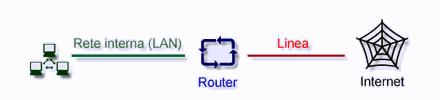

INTRODUZIONE
Una
rete a commutazione di messaggi è composta interamente da elementi riflettenti,
denominati "mirror". I mirror sono divisi in router, bridge
e switch; tali dispositivi
ricevono messaggi su una interfaccia,
verificano le destinazioni dei messaggi stessi tramite specifiche tabelle e
li ritrasmettono verso un'altra interfaccia.
L'intento
di questo lavoro è di dare inizialmente un'idea generale riguardo le
funzionalità dei router, per poi analizzare nello specifico un determinato
modello di router ADSL della Cisco Systems, il modello 827.
Il
Router è un'apparecchiatura che serve a collegare una rete di computer
(PC o Mac) ad un'altra LAN
o ad Internet mediante
un collegamento di tipo LAN/ISDN/ADSL
o altro. La versatilità di tale apparecchio permette una configurazione
personalizzata con la possibilità di discriminare orari e tempi di connessione
e tipologia di accesso per ogni postazione connessa alla rete.

Il
compito del router e' costituito da 2 attivita' principali :
- Determinazione
del percorso ottimale, ovvero la strada che il pacchetto deve percorrere attraversando vari router,
per arrivare da un punto A su una rete ad un punto B su un'altra, ottimizzando
i tempi di percorrenza;
- Trasporto
delle informazioni tra 2 reti diverse.
La
tipica architettura dei router, è costituita da un algoritmo che calcola
e crea la tabella d'instradamento (tabella di routing), che contiene l'indirizzo
di destinazione, la porta verso cui inoltrare il pacchetto (interface), il numero
di router da attraversare (hops) e il costo in termini di tempo; infine questa
architettura è completata da un processo di instradamento che schedula
le operazioni verso altre LAN,
WAN, e Internet.
Gli
algoritmi di routing rappresentano regole memorizzate nelle tabelle di routing,
affinchè pacchetti spediti da un mittente raggiungano le loro destinazioni
attraverso percorsi più idonei.
Questi algoritmi si differenziano in base a diverse caratteristiche, quali:
-
Ottimizzazione:
è l'abilità dell'algoritmo a scegliere la strada migliore.
La strada dipende dalla metrica (unità di misura per calcolare la
lunghezza del percorso);
-
Semplicità: l'algoritmo deve essere funzionalmente
efficiente con un minimo software e una bassa utilizzazione delle risorse
hardware;
- Robustezza:
a fronte di guasti hardware, alto traffico, l'algoritmo deve continuare
a lavorare;
- Rapidita'
di convergenza: quando ad esempio una LAN
non è più raggiungibile, i router distribuiscono messaggi
di aggiornamento di tale cambiamento a tutta la rete nel più breve
tempo possibile perché in caso contrario si potrebbero verificare
dei "routing loop", ossia quando un pacchetto rimane vincolato
a muoversi fra 2 o più router senza trovare una via d'uscita;
-
Flessibilità:
i router devono adattarsi velocemente e accuratamente a una varietà
di circostanze quali per esempio la caduta di una network; in questo caso
i router devono scegliere il miglior percorso per tutti quei pacchetti che
usavano la network caduta.
| Destin. Address |
Interface |
Hops |
Costo |
| D |
local |
0 |
0 |
| B |
I1 |
1 |
5 |
| A |
I1 |
2 |
2+5=7 |
| C |
I2 |
1 |
6 |
| E |
I3 |
2 |
10 |
| F |
I3 |
1 |
3 |
Tabella di routing
I
protocolli di routing mappano la topologia della rete e memorizzano le relative
valutazioni di quella topologia nella tabella di routing, pertanto gli algoritmi
di routing possono essere classificati per tipo:
- Statici
o dinamici: negli algoritmi statici le tabelle di routing che vengono
memorizzate vengono compilate da una persona (Network Administrator) e i
valori di tali tabelle non cambiano per nessun motivo fin quando il Network
Administrator non li cambia, mentre in quelli dinamici le tabelle vengono
continuamente aggiornate e cambiate a seconda dei cambiamenti della rete
(caduta o inserimento di una network);
- A
percorso singolo o multiplo: alcuni algoritmi supportano più
percorsi per una stessa destinazione;
- Gerarchici:
alcuni router hanno funzioni diverse in quanto più nodi
vengono suddivisi in gruppi logici chiamati domain, AS (Autonomous System)
o aree e solo alcuni di questi router possono interagire con ulteriori router
di altri domain, mentre altri possono interagire con router appartenenti
allo stesso domain.
-
Link State o Distance Vector:
link state (conosciuto anche come shortest path first) trasferisce tutte
le informazioni di routing a tutti i nodi;
comunque ogni router invia solo la porzione di tabella che descrive lo stato
dei suoi link. Gli algoritmi del tipo distance vector inviano tutta o parte
della tabella ai soli router vicini. Quindi link state spedisce piccoli
aggiornamenti a tutti, distance vector spedisce grossi aggiornamenti ma
solo ai router vicini. I link state richiedono più risorse hardware
necessarie (CPU e memoria) rispetto ai distance vector, ma sono meno propensi
ai routing loop;
- Metrica:
per selezionare il miglior percorso gli algoritmi scelgono diversi criteri
di scelta, per lunghezza del percorso, per affidabilità del link,
per ritardo, per banda passante, per carico di rete. Tuttavia, gli unici
due parametri universalmente accettati sono:
- HOPS:
numero di salti effettuati, cioè il numero di IS attraversati
lungo il cammino;
- COSTO:
somma dei costi di tutte le linee attraversate (il costo di una linea
è inversamente proporzionale alla sua velocità).
Architettura router
Un
processo che a volte è implementato dai router è il DNS
(Domain Name Service), il quale memorizza nella cache dati DNS;
comunque,
il DNS non è fondamentale
per l’architettura di un router, e non tutti concordano che un router
debba offrire tale servizio.